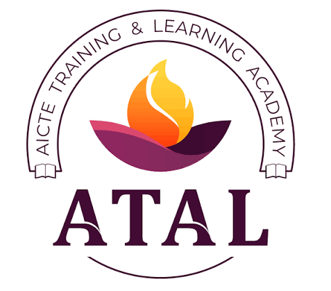
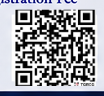

Practical LLM understanding
Understand LLM architecture, applications, prompt engineering, AI agents, security, evaluation, deployment and future research.
A three-day hands-on workshop on LLM architecture, applications, prompt engineering, agents, security, evaluation and future research.

Organized by
Kochi – 682022, Kerala
About the initiative
The All India Council for Technical Education (AICTE) launched the VAANI initiative — Vibrant Advocacy for Advancement and Nurturing of Indian Languages — to promote Indian languages in technical education, especially in emerging technologies.
This workshop brings LLM concepts closer to learners through accessible, inclusive and practical learning, with a special emphasis on Malayalam.
Empowering Minds, Enabling Innovation, Enriching Indian Languages
— Workshop themeWhat you will gain
Understand LLM architecture, applications, prompt engineering, AI agents, security, evaluation, deployment and future research.
Promote AI awareness and inclusion by improving accessibility and understanding.
Make AI learning more accessible, inclusive and effective through native-language instruction.
Three-day programme
Learn from practitioners
Professor
Department of Computer Science, Central University of Kerala, KasaragodGlobal Leader & Technologist, EY
TrivandrumProfessor & Head, Department of Computer Applications
Cochin University of Science and Technology, Kochi-22, KeralaProfessor
Department of Computer Applications, Cochin University of Science and Technology, Kochi-22, KeralaAssociate Director
Cognizant Technology Solution, Kochi, KeralaSenior Security Consultant
AEET Team, EY GDS, Kochi, KeralaExpected outcomes
Open registration
There is no registration fee. Scan the QR code to register.

Scan to register
Organizing team
Professor and Head, Department of Computer Applications, CUSAT
Assistant Professor, Department of Computer Applications, CUSAT